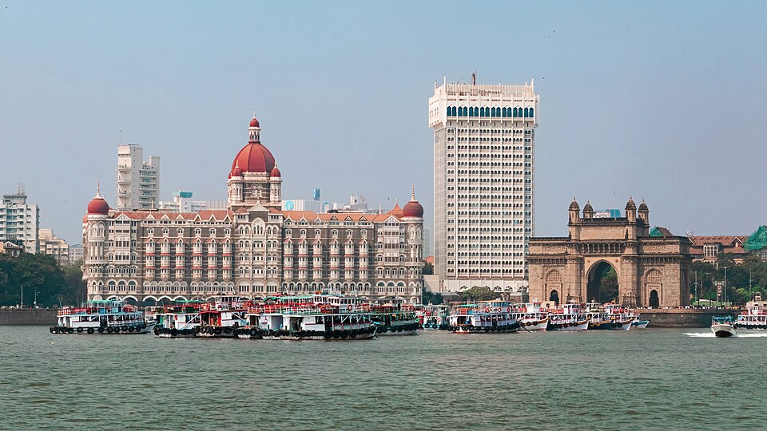

Taj Mahal Stop 1
Taj Mahal
Agra, Uttar Pradesh — Wonder of the World
Built by Mughal Emperor Shah Jahan in memory of his beloved wife Mumtaz Mahal, the Taj Mahal is a timeless symbol of love. Completed in 1653, this ivory-white marble mausoleum is a UNESCO World Heritage Site and one of the Seven Wonders of the World.

The Iconic View
The Taj Mahal reflected in the long central pool flanked by cypress trees.

Sunrise at the Taj
The marble glows golden at dawn — the most magical time to visit.
Quick Facts
- Built: 1632–1653 CE
- Material: White Makrana marble
- UNESCO World Heritage Site (1983)
- One of the Seven Wonders of the World
- Location: Agra, Uttar Pradesh
- 20,000 artisans worked on it